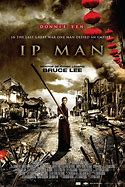

|  |
1.
Ip Man
(2008)
1hr 46min | Biography, Action, Drama
 8/10
 59
Official Trailer
|
Dramatizes the life of Yip Man (1893-1972) in the mid to late 1930s. Foshun is a prosperous city with many martial arts schools. Yip, who practices Wing Chun, is the local master. When a rough gang comes to town, it's Yip they must challenge. Then, Japan invades China. Yip and his family live in poverty, with Yip taking any work for food. General Miura, now in charge, stages martial arts fights between Chinese and his men: winners get extra rice. When the general's attaché murders a colleague of Yip's, Yip must step forward. At the same time, the ruffians return to town, this time threatening a local cotton mill. Can Yip protect the mill and also face Miura and certain death? |
Donnie Yen
Kent Cheng
Lynn Hung
Simon Yam
Siu-Wong Fan
|
Wilson_Yip
|
|
2.
Ip Man 2
(2010)
1hr 48min | Biography, Action, Drama
7.5/10
67
Official Trailer
|
In 1950, Yip Man (1893-1972) has left Foshun for Hong Kong. With his wife expecting their second child, Yip opens a martial arts school to teach Wing Chun. Things start slowly and even when he has students, Yip doesn't always collect tuition. Yip also runs afoul of the local guild of martial arts masters: they demand that he defeat each of them before they will let his school continue; the elder of the group, Master Hong Zhen Nan, also demands a sizable payment. Yip is defiant. Then, things go terribly wrong with the British when their boxing champion insults Chinese martial arts at a public demonstration. Master Hong steps up to defend Chinese honor, but will that be enough? |
Donnie Yen
Kent Cheng
Sammo Hung
Xiaoming Huang
Lynn Hung
|
|
3.
Ip Man 3
(2015)
1hr 45min | Biography, Action, Drama
7.1/10
57
Official Trailer
|
The year is 1959, where Ip Man lives in Hong Kong with his wife and his younger son. Trouble arises when a corrupt property developer and his thugs terrorize the school where Ip Man's son goes to. Ip Man and his disciples have to help the police guard the school day and night. On the other hand, Ip Man has to deal with his wife's terminal sickness, and at the same time faces a challenge from another Wing Chun fighter who ambitiously seeks to claim the Wing Chun Grandmaster title. |
Donnie Yen
Kent Cheng
Lynn Xiong
Jin Zhang
Mike Tyson
|
|
4.
Master Z: Ip Man Legacy
(2018)
1hr 47min | Biography, Action, Crime
6.5/10
72
Official Trailer
|
Set in the 1960s, Cheung Tin Chi (Max Zhang) believes fighting is a discipline of the past for him as he waits tables in Hong Kong to earn a living for himself and his young son. But once again, Cheung finds himself dragged back into the game with foreigners and the triad, as well as a new enemy, Owen Davidson (Dave Bautista), a muscular American drug lord who will take a tremendous amount of skill to beat. |
Zhang Jin
Dave Bautista
Xing Yu
Yan Liu
Tony Jaa
|
Woo-ping Yuen
|
|
5.
Ip Man 4: The Finale
(2019)
1hr 47min | Biography, Action, Drama
7.1/10
62
Official Trailer
|
Ip Man has to travel to San Francisco to secure a bright future for his son who just gets expelled. When he attempts to get a recommendation letter from the Chinese Benevolent Association, he finds that the martial arts masters are furious with Bruce Lee, one of Ip Man's students, who is confronting pervasive racial discrimination in San Francisco after opening a Wing Chun school there. Meanwhile, discrimination against Chinese is making things even more tense as Ip Man has to stand up for his fellow countrymen as well. |
Donnie Yen
Kent Cheng
Wu Yue
Scott Adkins
|
Wilson Yip
|